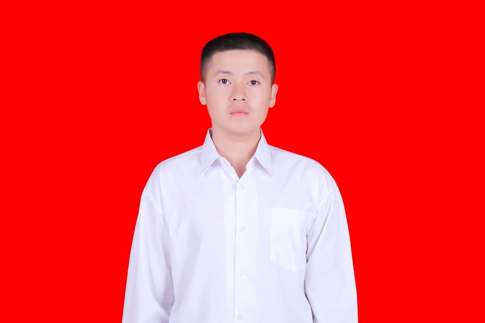

I'm currently studying at Brawijaya University, majoring in information technology. My background is UI/UX design. Hopefully, this introduces me to you. Warm regards.

A roadmap of my academic foundations in technology and creative thinking.
Information Technology
Higher education focused on complex systems, programming, and user-centric software design.
High School
Developed analytical skills and early interests in digital technology and creative arts.
Junior High School
Focus on logic building and participation in various academic competitions.
Primary Education
Early foundational years focusing on creative expression and team collaboration.
Elementary School
The beginning of my educational journey, fostering a love for learning and curiosity.
Football is my lifelong passion, teaching me the value of teamwork and persistence.
Playing drums since childhood, music provides my creative pulse and discipline.
Aktif mengambil proyek sampingan yang berkaitan dengan UI/UX design dan solusi IT guna mengasah keahlian praktis di dunia nyata.
Berawal dari kota kelahiran saya di Kediri, Jawa Timur, perjalanan akademis dan kreatif membawa saya mengeksplorasi dunia teknologi informasi dan desain lebih dalam.
Bagi saya, teknologi dan seni adalah dua hal yang saling melengkapi. Ketika tidak sedang mendesain antarmuka aplikasi (UI/UX) atau mempelajari sistem IT di kampus, saya melatih ketukan ritme dan focus lewat bermain drum, atau mengasah kerja sama serta strategi di lapangan sepak bola.
Whether it's a digital product or a visual identity, I'm ready to bring your vision to life with precision and care.